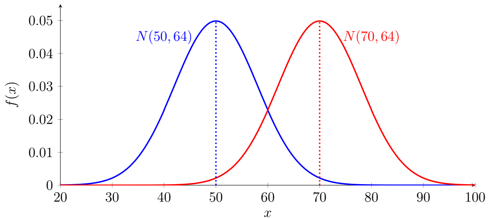
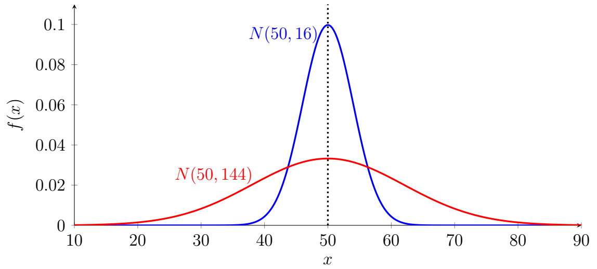

Chapter 7: Normal Distribution
Section 7.2: Normal Distribution
Many naturally occurring measurements, such as heights, test scores, blood pressure, and manufacturing measurements, tend to cluster around an average value with fewer observations occurring as we move farther away from the average. When a distribution of data is approximately symmetric, unimodal, and bell-shaped, a normal distribution may provide a useful model.
What Is a Normal Distribution?
Definition: Normal Distribution
The normal distribution is one of the most important probability distributions in statistics. It serves as the foundation for many statistical methods and provides a useful model for a wide variety of real-world phenomena.
A normal distribution is completely determined by two parameters:
- the population mean, \(\mu\), which determines the center of the distribution, and
- the population variance, \(\sigma^2\), which determines the spread.
A random variable \(X\) that follows a normal distribution with mean \(\mu\) and variance \(\sigma^2\) is written
\[X\sim N(\mu,\sigma^2).\]This is a convention. This is the most common interpretation in the statistical community.
Some software and texts use a different convention in which the second parameter represents the standard deviation, \(X\sim N(\mu,\sigma)\). Always verify the convention being used.
Properties of the Normal Distribution
Properties of the Normal Distribution
Every normal distribution has the following characteristics.
- The graph is bell-shaped and symmetric about the mean.
- The mean, median, and mode are all equal.
- The highest point of the curve occurs at the mean.
- The total area under the curve is equal to 1.
- The tails of the curve approach, but never touch, the horizontal axis.
- For a normally distributed random variable approximately \(68\%\), \(95\%\), and \(99.7\%\) of observations lie within one, two, and three standard deviations of the mean, respectively. This is referred to as the Empirical Rule.
Since the total area under the density curve is 1 and the density is nonnegative everywhere, the normal distribution qualifies as a probability distribution.
Because the normal distribution is symmetric,
\[P(X\leq \mu)=P(X\geq \mu)=0.5.\]This means that any interval centered at the mean contains equal amounts of area on either side of the mean.
Empirical Rule
Since approximately \(68\%\), \(95\%\), and \(99.7\%\) of observations lie within one, two, and three standard deviations of the mean, respectively; and any interval centered at the mean contains equal amounts of area on either side of the mean; we can further divide up the entire region under the curve.
![A bell-shaped normal curve over an x-axis labeled from mu minus 3 sigma to mu plus 3 sigma in steps of one standard deviation, with the peak at mu. The area under the curve is shaded in three nested bands: orange within one standard deviation of the mean, yellow out to two standard deviations, and green out to three. Dashed vertical lines mark each standard deviation. The percentage of area in each region is labeled: 34 percent between mu and mu plus sigma, 13.5 percent between mu plus sigma and mu plus 2 sigma, 2.35 percent between mu plus 2 sigma and mu plus 3 sigma, and 0.15 percent beyond mu plus 3 sigma, with the same values mirrored on the left side of the mean.](images1/mth245_7_2_1.png)
Example 1
Suppose adult male heights are approximately normally distributed with
\[\mu=70\text{ inches},\qquad \sigma=3\text{ inches}.\]Use the Empirical Rule to describe the distribution of heights.
Solution
Most men have heights close to \(70\) inches, while very short or very tall heights occur much less frequently.
Using the Empirical Rule, approximately
\[68\%\text{ of heights lie between }67\text{ and }73\text{ inches},\] \[95\%\text{ lie between }64\text{ and }76\text{ inches},\] \[99.7\%\text{ lie between }61\text{ and }79\text{ inches}.\]By dividing the chart up as above, we can further see approximately
\[49.85\%\text{ of heights lie between }61\text{ and }70\text{ inches},\] \[81.5\%\text{ of heights lie between }67\text{ and }76\text{ inches},\] \[84\%\text{ of heights lie below }73\text{ inches}.\]Example 2
Suppose scores on a standardized examination follow a normal distribution with
\[\mu=500,\qquad \sigma=100.\]Use the Empirical Rule to describe the distribution of scores.
Solution
Most students (approximately \(68\%\)) score between
\[400\text{ and }600,\]while relatively few (approximately \(0.3\%\)) score below \(200\) or above \(800\).
Changing the Mean
Changing the mean shifts the entire distribution left or right without changing its shape.
If \(X\sim N(50,64)\) and \(Y\sim N(70,64)\), then both distributions have the same spread, but the distribution of \(Y\) is centered \(20\) units to the right.

Remember, \(X\sim N(50,64)\) represents a distribution with mean \(\mu=50\) and variance \(\sigma^2=64\), therefore standard deviation \(\sigma=8\).
Changing the Variance
Changing the standard deviation changes the spread of the distribution.
For example, \(X\sim N(50,16)\) produces a tall, narrow bell curve, while \(Y\sim N(50,144)\) produces a shorter, wider bell curve. Although both distributions are centered at \(50\), the second exhibits much greater variability.

For a normal distribution, approximately \(68\%\) of observations lie within one standard deviation of the mean, so changing \(\sigma\) changes both the spread and the height of the density curve.
When Is the Normal Distribution Appropriate?
Many real-world variables are approximately normal, especially when observations arise from many small, independent sources of variation. Examples include
- adult heights,
- IQ scores,
- measurement errors,
- manufacturing dimensions,
- standardized test scores (approximately), and
- many biological measurements.
Not every data set is normally distributed. Variables such as household income, home prices, and waiting times are often strongly skewed and require different probability models.
That said, a variable does not need to be exactly normally distributed for a normal model to be useful. The appropriateness of the model depends on how well the normal distribution represents the relevant features of the data or probability distribution.
Key Points
- The normal distribution is a symmetric, bell-shaped probability distribution.
- It is completely determined by its mean \(\mu\) and standard deviation \(\sigma\).
- The mean, median, and mode are equal.
- The total area under the curve equals \(1\).
- Larger values of \(\sigma\) produce wider, flatter curves, while smaller values produce narrower, taller curves.
- Differing values of \(\mu\) shift the curve left and right.
- Many natural and manufactured quantities are well approximated by a normal distribution.